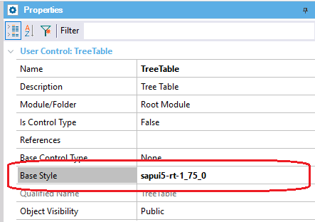

This document is intended for developers who already know the User Control object and its basic concepts.
It's possible to create User Control Objects using SAPUI5's XML based language for views in the "Screen Template" part of the object.
The target can be specified using "target" attribute in the Definition tag, in the Properties part:
<Definition auto="false" target="SAPUI5" render-mode="first-time">
In addition, it is necessary to assign the Base Style of SAPUI5 to the User Control. It's possible using the Base Style property:

A property can be bound to a SAPUI5 control using the double mustache syntax, as in HTML UC objects. For example, here we are binding the SAPUI5 Button's text property to the UC object's Caption property.
Screen template
<mvc:View
xmlns="sap.m"
xmlns:mvc="sap.ui.core.mvc"
xmlns:core="sap.ui.core">
<Button type="Accept" text="{{Caption}}" />
</mvc:View>
For UC objects where "Is Control Type" property is true, the data binding between the screen element and the control's value can be expressed as in HTML UC objects, using {{DataElement}} in the screen template. For example, this code shows how to bind the SAPUI5 Switch's control state property to the UC object's value:
Screen template
<mvc:View
xmlns:mvc="sap.ui.core.mvc"
xmlns="sap.m">
<Switch
customTextOn="{{TextOn}}"
customTextOff="{{TextOff}}"
{{DataElement:state}}>
</Switch>
</mvc:View>
SAPUI5 UC objects support defining event handlers, like their standard HTML UC objects counterparts. For example, this code shows how to declare an event called OnClick, that is called when the press event of the SAPUI5 Button control is fired:
Screen Template
<mvc:View
xmlns="sap.m"
xmlns:mvc="sap.ui.core.mvc"
xmlns:core="sap.ui.core">
<Button type="Accept" text="{{Caption}}" {{OnClick}} />
</mvc:View>
Properties
<Definition auto="false"> <Event Name="OnClick" On="press" /> <Property Name="Caption" Type="string" Default="" /> </Definition>
SAPUI5 UC objects support defining slots, but with a slight difference to fully support SAPUI5 view's syntax. To define a slot, first the XHTML namespace must be declared in the view definition, for example:
<mvc:View
xmlns:l="sap.ui.layout"
xmlns:core="sap.ui.core"
xmlns:mvc="sap.ui.core.mvc"
==> xmlns:html="[http://www.w3.org/1999/xhtml]"
xmlns="sap.m">
Then, the slot can be placed like this:
<html:slot name="body" />
A new moment was added for the scripts, called AfterSAPUI5Init. Scripts with "when='AfterSAPUI5Init'" will be executed once SAPUI5 is loaded and ready.
As many of SAPUI5 controls are expensive to render, there is a property to specify if the User Control is completely re-rendered after a property change in an event or not. Up until now, User Controls always did a full re-render when a property was changed. The rendering mode can be specified using "render-mode" attribute in the Definition tag, in the Properties part. The accepted values are "first-time" and "always" (default). If render-mode="first-time", the control will be rendered only once, allowing the developer to update the control to reflect changes in an "AfterShow" script.
| Backlinks | |
| GeneXus for SAP Systems 17 Release Notes | Multi-experience with GeneXus 17 |